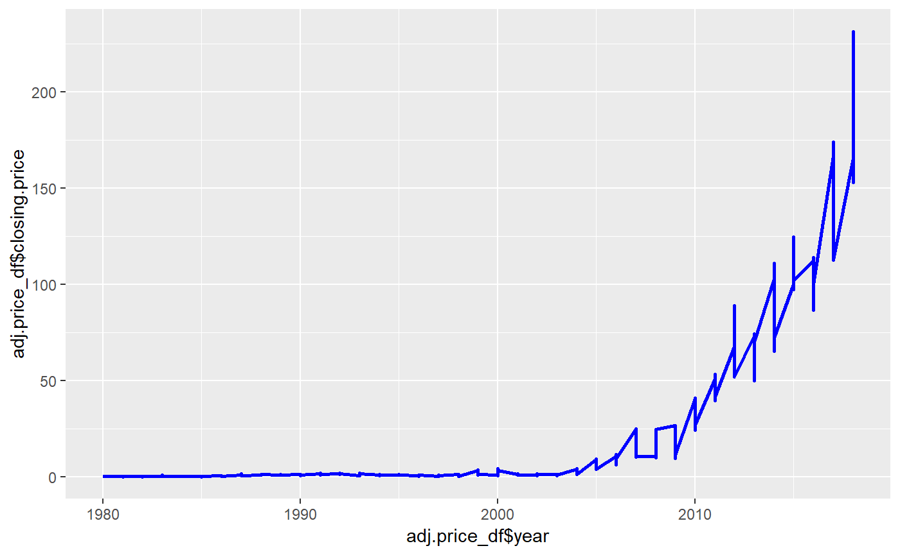
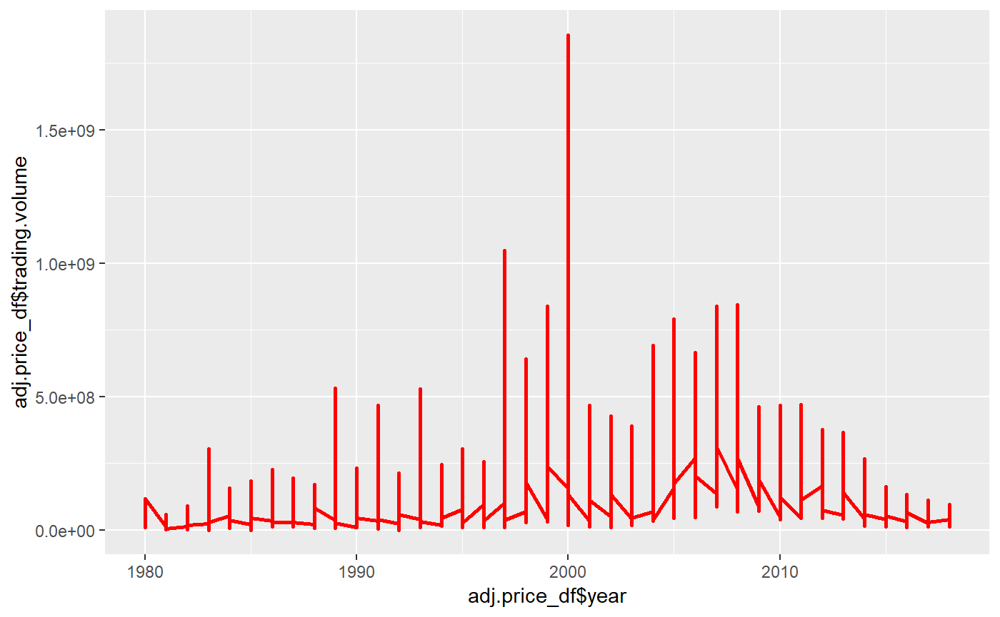

my-vignette.RmdApplestock is a data package about Apple’s stock price, which records information related to Apple’s stock price since 2007. This packet contains a total of two data sets and two functions. A data set called “adj.price_df” records the daily share price of Apple from 2007 to 2018, in the form of closing prices. At the same time, this data package also records information such as daily trading volume, dividends and so on. Another data packet, productreturn, is a composite data packet. The data of this dataset mainly comes from the adj.price_df dataset we mentioned earlier, which data is downloaded by using API provided by Intrinio, a financial data website. Another data source of productreturn is the wikipedia website, which records the time when all of Apple’s new mobile phone products and new IOS systems were released. The 3 data sources of productretun is listed as follows:
Intrinio: https://intrinio.com/ Wikipedia iPhone: https://en.wikipedia.org/wiki/IPhone wikipedia IOS: https://en.wikipedia.org/wiki/IOS_version_history
This data provides AAPL’s stock closing price from 2007 to Dec.14th, 2018 the date that this project is finished. Trading volume every trading day and its dividends are recorded in this dataset as well.
The data collection process is as follow:
##
## Attaching package: 'testthat'## The following objects are masked from 'package:devtools':
##
## setup, test_file## Loading required package: xml2library(RCurl)## Loading required package: bitops## -- Attaching packages ------------------------------------------------------------------------------------------------------ tidyverse 1.2.1 --## v ggplot2 3.1.0 v purrr 0.2.5
## v tibble 1.4.2 v dplyr 0.7.8
## v tidyr 0.8.2 v stringr 1.3.1
## v readr 1.2.1 v forcats 0.3.0## -- Conflicts --------------------------------------------------------------------------------------------------------- tidyverse_conflicts() --
## x tidyr::complete() masks RCurl::complete()
## x dplyr::filter() masks stats::filter()
## x purrr::flatten() masks jsonlite::flatten()
## x readr::guess_encoding() masks rvest::guess_encoding()
## x purrr::is_null() masks testthat::is_null()
## x dplyr::lag() masks stats::lag()
## x dplyr::matches() masks testthat::matches()
## x purrr::pluck() masks rvest::pluck()##
## Attaching package: 'data.table'## The following objects are masked from 'package:dplyr':
##
## between, first, last## The following object is masked from 'package:purrr':
##
## transpose## Loading required package: proto## The API keys we obtained, we store them and do not post them in the code.
R.home(component = "home")## [1] "C:/Users/wangs/DOCUME~1/R-35~1.1"user_renviron = path.expand(file.path("~", ".Renviron"))
if(!file.exists(user_renviron)) # check to see if the file already exists.
file.create(user_renviron)
file.edit(user_renviron) # open with another text editor if this fails.# Extract stocks price using Intrinio API.
base <- "https://api.intrinio.com/"
indicator <- "prices"
stock <- "AAPL"
key <- Sys.getenv("INTRINIO_USSTOCKPRICE_TOKEN")
response_price <- GET(paste(base, indicator, "?", "ticker", "=", stock, "&frequency=daily",
"&page_number=", 1, "&api_key", "=", key, sep = ""),
user_agent("sw3321@columbia.edu
http://project.github.io"))
if(http_error(response_price)) { #Add a checking process to automatically check whether there is an error.
warning("Oops! The request produced an error.")
} else {
result_price <- content(response_price, "text")
price_json <- fromJSON(result_price, flatten = TRUE)
price_df <- as.data.frame(price_json)
pages <- price_json$total_pages #Get the number of total pages of this dataframe.
}## No encoding supplied: defaulting to UTF-8.# Obtain the whole dataset acrossing time and pages limits.
for (i in 2:pages) { #As Intrinio has a limits on pages download for every query, we need to write a code to repeat queries.
response_price_loop <- GET(paste(base, indicator, "?", "ticker", "=", stock, "&frequency=daily", "&page_number=", i, "&api_key", "=", key, sep = ""))
result_price_loop <- content(response_price_loop, "text")
price_json_loop <- fromJSON(result_price_loop, flatten = TRUE)
price_df_loop <- as.data.frame(price_json_loop)
price_df <- rbind(price_df, price_df_loop) #Combine pages downloaded into one dataframe.
}## No encoding supplied: defaulting to UTF-8.
## No encoding supplied: defaulting to UTF-8.
## No encoding supplied: defaulting to UTF-8.
## No encoding supplied: defaulting to UTF-8.
## No encoding supplied: defaulting to UTF-8.
## No encoding supplied: defaulting to UTF-8.
## No encoding supplied: defaulting to UTF-8.
## No encoding supplied: defaulting to UTF-8.
## No encoding supplied: defaulting to UTF-8.
## No encoding supplied: defaulting to UTF-8.
## No encoding supplied: defaulting to UTF-8.
## No encoding supplied: defaulting to UTF-8.
## No encoding supplied: defaulting to UTF-8.
## No encoding supplied: defaulting to UTF-8.
## No encoding supplied: defaulting to UTF-8.
## No encoding supplied: defaulting to UTF-8.
## No encoding supplied: defaulting to UTF-8.
## No encoding supplied: defaulting to UTF-8.
## No encoding supplied: defaulting to UTF-8.
## No encoding supplied: defaulting to UTF-8.
## No encoding supplied: defaulting to UTF-8.
## No encoding supplied: defaulting to UTF-8.
## No encoding supplied: defaulting to UTF-8.
## No encoding supplied: defaulting to UTF-8.
## No encoding supplied: defaulting to UTF-8.
## No encoding supplied: defaulting to UTF-8.
## No encoding supplied: defaulting to UTF-8.
## No encoding supplied: defaulting to UTF-8.
## No encoding supplied: defaulting to UTF-8.
## No encoding supplied: defaulting to UTF-8.
## No encoding supplied: defaulting to UTF-8.
## No encoding supplied: defaulting to UTF-8.
## No encoding supplied: defaulting to UTF-8.
## No encoding supplied: defaulting to UTF-8.
## No encoding supplied: defaulting to UTF-8.
## No encoding supplied: defaulting to UTF-8.
## No encoding supplied: defaulting to UTF-8.
## No encoding supplied: defaulting to UTF-8.
## No encoding supplied: defaulting to UTF-8.
## No encoding supplied: defaulting to UTF-8.
## No encoding supplied: defaulting to UTF-8.
## No encoding supplied: defaulting to UTF-8.
## No encoding supplied: defaulting to UTF-8.
## No encoding supplied: defaulting to UTF-8.
## No encoding supplied: defaulting to UTF-8.
## No encoding supplied: defaulting to UTF-8.
## No encoding supplied: defaulting to UTF-8.
## No encoding supplied: defaulting to UTF-8.
## No encoding supplied: defaulting to UTF-8.
## No encoding supplied: defaulting to UTF-8.
## No encoding supplied: defaulting to UTF-8.
## No encoding supplied: defaulting to UTF-8.
## No encoding supplied: defaulting to UTF-8.
## No encoding supplied: defaulting to UTF-8.
## No encoding supplied: defaulting to UTF-8.
## No encoding supplied: defaulting to UTF-8.
## No encoding supplied: defaulting to UTF-8.
## No encoding supplied: defaulting to UTF-8.
## No encoding supplied: defaulting to UTF-8.
## No encoding supplied: defaulting to UTF-8.
## No encoding supplied: defaulting to UTF-8.
## No encoding supplied: defaulting to UTF-8.
## No encoding supplied: defaulting to UTF-8.
## No encoding supplied: defaulting to UTF-8.
## No encoding supplied: defaulting to UTF-8.
## No encoding supplied: defaulting to UTF-8.
## No encoding supplied: defaulting to UTF-8.
## No encoding supplied: defaulting to UTF-8.
## No encoding supplied: defaulting to UTF-8.
## No encoding supplied: defaulting to UTF-8.
## No encoding supplied: defaulting to UTF-8.
## No encoding supplied: defaulting to UTF-8.
## No encoding supplied: defaulting to UTF-8.
## No encoding supplied: defaulting to UTF-8.
## No encoding supplied: defaulting to UTF-8.
## No encoding supplied: defaulting to UTF-8.
## No encoding supplied: defaulting to UTF-8.
## No encoding supplied: defaulting to UTF-8.
## No encoding supplied: defaulting to UTF-8.
## No encoding supplied: defaulting to UTF-8.
## No encoding supplied: defaulting to UTF-8.
## No encoding supplied: defaulting to UTF-8.
## No encoding supplied: defaulting to UTF-8.
## No encoding supplied: defaulting to UTF-8.
## No encoding supplied: defaulting to UTF-8.
## No encoding supplied: defaulting to UTF-8.
## No encoding supplied: defaulting to UTF-8.
## No encoding supplied: defaulting to UTF-8.
## No encoding supplied: defaulting to UTF-8.
## No encoding supplied: defaulting to UTF-8.
## No encoding supplied: defaulting to UTF-8.
## No encoding supplied: defaulting to UTF-8.
## No encoding supplied: defaulting to UTF-8.
## No encoding supplied: defaulting to UTF-8.
## No encoding supplied: defaulting to UTF-8.startdate <- "2007-01-03" #For AAPL stock information can be traced back to 1980, which we do not need. Set the starting date for this date.
findstartdaye <- price_df$data.date == startdate
rowstartdate <- which(findstartdaye == TRUE) #Check the row that startdate is located.
historicalprice <- price_df[1:rowstartdate,]## Extract Table from HTML
url_wiki <- "https://en.wikipedia.org/wiki/IPhone"
wiki <- read_html(url_wiki)
alc_table <- html_node(x = wiki, xpath = "//table[1]")
## Extract the wiki page title
xpath_sheetname <- '//*[@id="firstHeading"]'
page_name <- html_node(x = wiki, xpath = xpath_sheetname)
page_title <- html_text(page_name)
page_title## [1] "iPhone"## Extract the iPhone content
xpath_caption <- '//*[@id="mw-content-text"]/div/h2[1]'
table_caption_node <- html_node(x = alc_table , xpath = xpath_caption)
table_caption <- html_text(table_caption_node)
table_caption## [1] "History and availability"## Extract the iPhone table
iphonetime <- wiki %>%
html_node(xpath = '//*[@id="mw-content-text"]/div/table[3]') %>%
html_table(fill = TRUE)
## wrangle the iPhone table
iphonetime[,3] <- format(sub("^[^(]*", "", iphonetime[,3]))
iphonetime[,3] <- format(substring(iphonetime[,3], 2, 11))
iphonetime[,3] <- format(as.Date(iphonetime[,3], "%Y-%m-%d"), "%d-%m-%Y")
iphonetime <- iphonetime[1:16, 1:7]
names(iphonetime) <- c("iPhone", "IOS", "Release_date", "FinalOS", "Warrantyend", "Warrantylifespan", "Launchprice")
## wrangle the iPhone table
price_performance_df <- iphonetime %>%
select(iPhone, Release_date) %>%
separate(iPhone, into = c("Product", "Version"), sep = " ")
rownames(price_performance_df) <- c(1:16)
## Extract ios Table from HTML
url_wiki_ios <- "https://en.wikipedia.org/wiki/IOS_version_history"
wiki_ios <- read_html(url_wiki_ios)
## wrangle the ios table
iostime <- wiki_ios %>%
html_node(xpath = '//*[@id="mw-content-text"]/div/table[1]') %>%
html_table(fill = TRUE)
iostime <- iostime[2:9,c(1,6)]
rownames(iostime) <- c(1:8)
colnames(iostime) <- c("Version", "Release_date")
iostime[5,2] <- "Jun 30, 2014"
iostime[,2] <- format(as.Date(iostime[,2], "%b %d,%Y"), "%d-%m-%Y")
iostime <- cbind(Product = "IOS", iostime)
##rbind iPhone and ios
product_version <- rbind(price_performance_df, iostime)
kable(product_version)| Product | Version | Release_date |
|---|---|---|
| iPhone | NA | 29-06-2007 |
| iPhone | 3G | 11-07-2008 |
| iPhone | 3GS | 19-06-2009 |
| iPhone | 4 | 21-06-2010 |
| iPhone | 4S | 14-10-2011 |
| iPhone | 5 | 21-09-2012 |
| iPhone | 5C | 20-09-2013 |
| iPhone | 5S | 20-09-2013 |
| iPhone | 6 | 19-09-2014 |
| iPhone | 6S | 25-09-2015 |
| iPhone | SE | 31-03-2016 |
| iPhone | 7 | 16-09-2016 |
| iPhone | 8 | 22-09-2017 |
| iPhone | X | 03-11-2017 |
| iPhone | XS | 21-09-2018 |
| iPhone | XR | 26-10-2018 |
| IOS | 3.1.3 | 02-02-2010 |
| IOS | 4.2.1 | 22-11-2010 |
| IOS | 5.1.1 | 07-05-2012 |
| IOS | 6.1.6 | 21-02-2014 |
| IOS | 7.1.2 | 30-06-2014 |
| IOS | 9.3.5 | 25-08-2016 |
| IOS | 10.3.3 | 19-07-2017 |
| IOS | 12.1.1 | 05-12-2018 |
## Trim the AAPL price data, retaining data since 2007
adj.price_df <- price_df %>%
select(date = data.date, closing.price = data.adj_close, trading.volume = data.adj_volume, dividend = data.ex_dividend)
adj.price_df$date <- format(as.Date(adj.price_df$date, "%Y-%m-%d"), "%d-%m-%Y")
adj.price_df$year <- as.numeric(format(substring(adj.price_df$date, 7, 10)))
head(adj.price_df)## date closing.price trading.volume dividend year
## 1 14-12-2018 165.48 40703710 0 2018
## 2 13-12-2018 170.95 31897827 0 2018
## 3 12-12-2018 169.10 35627674 0 2018
## 4 11-12-2018 168.63 47281665 0 2018
## 5 10-12-2018 169.60 62025994 0 2018
## 6 07-12-2018 168.49 42281631 0 2018ggplot(data=adj.price_df, aes(x=adj.price_df$year, y=adj.price_df$closing.price, group=1)) +
geom_line(colour="blue", size=1)
ggplot(data=adj.price_df, aes(x=adj.price_df$year, y=adj.price_df$trading.volume, group=1)) +
geom_line(colour="red", size=1)
## Write a CSV in R: This code is deleted as we already finished this step. Right now, the original dataframes have been downdoaded and already could be used. We will leave these two datasets for a while, as in the next step, we are going to build two functions, which can be used to make some statistical analysis on the adj.price_df dataset and calculate returns. After building these two functions, we will use them to integrate the profuctreturn dataset, which is a highly wrangled dataset based on adj.price_df and product_version using SQL language.
# function_1
#Holding Period Price Return Function
#We are not using "load" function here as we can directly extract data from adj.price_df above, this process of obtaining data is a little bit different from the function in the package: in the package we obatin that data using "load" function to get them from a rda file.
HPPR <- function(day.buy = "21-09-2018", day.sell = "25-09-2018") {
if(sum(str_detect(adj.price_df$date, day.buy)) & sum(str_detect(adj.price_df$date, day.sell))) { #see whether value input existed in data
buydate <- as.numeric(format(as.Date(day.buy, "%d-%m-%Y"), "%Y%m%d")) #transform character dates into numeirc type.
selldate <- as.numeric(format(as.Date(day.sell, "%d-%m-%Y"), "%Y%m%d"))
booleanpanel_1 <- adj.price_df$date == day.buy #find where the date input exactly is located.
rownumber_1 <- which(booleanpanel_1 == TRUE) #find which row the date input exactly is located in adj.price_df.
buyprice <- adj.price_df[rownumber_1, 2]
booleanpanel_2 <- adj.price_df$date == day.sell #find where the date input exactly is located.
rownumber_2 <- which(booleanpanel_2 == TRUE) #find which row the date input exactly is located in adj.price_df.
sellprice <- adj.price_df[rownumber_2, 2]
if (buydate - selldate <= 0) { #Set a rule that date of buying must beofre the date of selling.
pricereturn <- paste(round(((sellprice - buyprice) / buyprice),2), "%")
max.price <- max(adj.price_df[rownumber_1:rownumber_2,2])
min.price <- min(adj.price_df[rownumber_1:rownumber_2,2])
max.return <- round(((max.price - min.price) / min.price), 2)
sd.price <- sd(adj.price_df[rownumber_1:rownumber_2,2])
print(data.frame(pricereturn, max.price, min.price, max.return, sd.price))
} else {
print("Buyday is later than sellday!")
}
} else {
print("Date input error: stock trading is closed on that day.")
}
}
kable(HPPR(day.buy = "21-09-2018", day.sell = "27-09-2018")) #an example## pricereturn max.price min.price max.return sd.price
## 1 0.03 % 224.1678 216.9032 0.03 2.653011| pricereturn | max.price | min.price | max.return | sd.price |
|---|---|---|---|---|
| 0.03 % | 224.1678 | 216.9032 | 0.03 | 2.653011 |
In the example above, pricereturn is the return gained by selling the stocks. max.price is the highest price between the buying day and the selling day, min.price is the lowest price during this period. max.return is the highest returns that a investors can get during this period if he buy stocks at the lowest price and sell it at the highest price during this period. sd.price is the standard deviation of price during this period.
# function_2
## Trading Day Price Return Function
#We are not using "load" function here as we can directly extract data from adj.price_df above, this process of obtaining data is a little bit different from the function in the package: in the package we obatin that data using "load" function to get them from a rda file.
TDPR <- function(base.day = "22-09-2015", trading.day = 30) {
if (base.day %in% adj.price_df$date) {
if (trading.day%%1 == 0) {
if (abs(trading.day) > 0) {
booleanpanel_3 <- adj.price_df$date == base.day #find where the date input exactly is located.
rownumber_3 <- which(booleanpanel_3 == TRUE) #find which row the date input exactly is located in adj.price_df.
if (rownumber_3 - trading.day >= 0 & rownumber_3 - trading.day <= 3016) {
tradingprice <- adj.price_df[rownumber_3 - trading.day, 2]
baseprice <- adj.price_df[rownumber_3, 2]
if (trading.day > base.day) {
pricereturn2 <- ((tradingprice - baseprice) / baseprice)
paste(round(100*pricereturn2, 2), "%", sep="")
} else {
pricereturn3 <- ((baseprice - tradingprice) / tradingprice)
paste(round(100*pricereturn3, 2), "%", sep="")
}
} else {
print("Error: Trading day beyond the time span of this data")
}
} else {
print("Error: You should input a trading day different from 0")
}
} else {
print("Error: trading.day must be a integer!")
}
} else {
print("Error: Check whether the base.day input is in adj.price_df.")
}
}
TDPR(base.day = "22-09-2015", trading.day = 40) ## [1] "0.68%"Now we come to the part to use all the things above to create our final dataset, productreturn. This dataset shows the trend of AAPL stock returns before and after iphone and ios launch events. This is interesting because using this dataset, we can have a look of the trend of market reactions to these new launches. For example, we see a drastic drop of stock prices 1 day before the launches, and a slow going up of returns during the following 2 months after the new launches. What is more, market’s reaction mechnism is also different to iphone4’s launching event and iphone XR’s launching event.
## Calculate the price of AAPL stocks in the day of their products launching events, based on the date given by wiki above.
check_existence_1 <- "29-06-2007" == adj.price_df$date
location_check_1 <- which(check_existence_1 == TRUE)
launchprice_1 <- adj.price_df[location_check_1, 2]
for(i in product_version$Release_date[-1]) {
check_existence <- i == adj.price_df$date
location_check <- which(check_existence == TRUE)
launchprice <- adj.price_df[location_check, 2]
launchprice_1 <- rbind(launchprice_1, launchprice)
}
launchprice_1 <- as.data.frame(launchprice_1)
row.names(launchprice_1) <- NULL
colnames(launchprice_1) <- c("launch stock price")## Generate a price_performance matrix using the function we created above.
return1 <- cbind(TDPR("29-06-2007", -42), TDPR("29-06-2007", -21), TDPR("29-06-2007", -5),
TDPR("29-06-2007", -1), "0%", TDPR("29-06-2007", 1), TDPR("29-06-2007", 5),
TDPR("29-06-2007", 21), TDPR("29-06-2007", 42))
for (i in product_version$Release_date[c(-1, -7, -16, -24)]) {
return <- cbind(TDPR(i, -42), TDPR(i, -21), TDPR(i, -5),
TDPR(i, -1), "0%", TDPR(i, 1), TDPR(i, 5),
TDPR(i, 21), TDPR(i, 42))
return1 <- rbind(return1, return)
}
colnames(return1) <- c("-2 months", "-1 month", "-1 week", "-1 days","launchday", "1 days", "1 week", "1 month", "2 months")
return1 <- as.data.frame(return1)
price_at_launch <- launchprice_1[c(-7, -16, -24), ]
price_performance <- cbind(product_version[c(-7, -16, -24), ], return1, price_at_launch)
## Using SQL to extract other useful information in price_df
intraday_data <- price_df[,1:6]
intraday_data$data.date<- format(as.Date(intraday_data$data.date, "%Y-%m-%d"), "%d-%m-%Y")
ordernumber <- c(nrow(intraday_data):1)
intraday_data <- cbind(ordernumber, intraday_data)
colnames(intraday_data) <- c("ordernumber", "data_date", "data_open", "data_high", "data_low", "data_close", "data_volume")
intraday_data <- sqldf("SELECT ordernumber, data_date, data_volume, data_open, data_high, data_low, data_close FROM intraday_data")
intraday_data <- sqldf("SELECT *, round((Abs(data_close - data_low) - Abs(data_close - data_high)),2)
AS TradeControl FROM intraday_data")
intraday_data <- sqldf("SELECT *, round((data_close - data_open),2)
AS MarketSentiment
FROM intraday_data")
intraday_data <- sqldf("SELECT *
FROM intraday_data
WHERE data_date IN ('29-06-2007', '11-07-2008', '19-06-2009', '21-06-2010', '14-10-2011', '21-09-2012', '20-09-2013', '19-09-2014', '25-09-2015', '31-03-2016', '16-09-2016', '22-09-2017', '03-11-2017', '21-09-2018', '02-02-2010', '22-11-2010', '07-05-2012', '21-02-2014', '30-06-2014', '25-08-2016', '19-07-2017')
ORDER BY ordernumber")
## Generate the final sheet
intraday_data_ios <- intraday_data[c(4, 6, 8, 11, 12, 16, 18), ]
intraday_data_iphone <- intraday_data[c(-4, -6, -8, -11, -12, -16, -18), ]
intraday_data <- rbind(intraday_data_iphone, intraday_data_ios)
intraday_data <- intraday_data[,c(-1, -2)]
kable(productreturn <- cbind(price_performance, intraday_data))| Product | Version | Release_date | -2 months | -1 month | -1 week | -1 days | launchday | 1 days | 1 week | 1 month | 2 months | price_at_launch | data_volume | data_open | data_high | data_low | data_close | TradeControl | MarketSentiment | |
|---|---|---|---|---|---|---|---|---|---|---|---|---|---|---|---|---|---|---|---|---|
| 1 | iPhone | NA | 29-06-2007 | 22.69% | 0.7% | -0.78% | 1.23% | 0% | 0.64% | 6.79% | -7.38% | 9.87% | 15.39751 | 40637106 | 121.45 | 124.000 | 121.0900 | 122.040 | -1.01 | 0.59 |
| 2 | iPhone | 3G | 11-07-2008 | -8.28% | -4.55% | 1.45% | -2.29% | 0% | -0.75% | -4.31% | 0.57% | -12.15% | 21.77402 | 33214614 | 175.37 | 177.110 | 171.0000 | 172.580 | -2.95 | -2.79 |
| 3 | iPhone | 3GS | 19-06-2009 | 14.55% | 10.81% | 1.83% | 2.65% | 0% | 1.54% | 2.12% | 9.63% | 17.58% | 17.59787 | 25780518 | 138.07 | 139.500 | 136.9000 | 139.480 | 2.56 | 1.41 |
| 4 | iPhone | 4 | 21-06-2010 | 4.22% | 13.63% | 6.25% | -1.42% | 0% | -1.34% | -0.69% | 6.27% | -7.51% | 34.08673 | 27731779 | 277.75 | 279.010 | 268.7300 | 270.170 | -7.40 | -7.58 |
| 5 | iPhone | 4S | 14-10-2011 | 10.91% | 7.39% | 14.12% | 3.32% | 0% | 0.48% | -6.9% | -10.13% | -9.91% | 53.24277 | 20477390 | 417.00 | 422.000 | 415.2700 | 422.000 | 6.73 | 5.00 |
| 6 | iPhone | 5 | 21-09-2012 | 17% | 4.67% | 1.28% | 0.2% | 0% | 1.35% | -4.71% | 10.42% | -19.4% | 88.70862 | 20413868 | 702.56 | 705.070 | 699.3617 | 700.095 | -4.24 | -2.46 |
| 8 | iPhone | 5S | 20-09-2013 | 12.29% | -6.96% | 0.54% | -1.04% | 0% | -4.73% | 3.28% | 11.54% | 11.8% | 60.63633 | 24975046 | 478.50 | 478.550 | 466.0000 | 467.410 | -9.73 | -11.09 |
| 9 | iPhone | 6 | 19-09-2014 | 4.4% | 0.38% | -0.69% | -0.82% | 0% | -0.1% | -0.21% | -1.19% | 14.87% | 93.75105 | 70902406 | 102.29 | 102.350 | 100.8800 | 100.960 | -1.31 | -1.33 |
| 10 | iPhone | 6S | 25-09-2015 | -6.61% | 4.58% | 1.11% | -0.25% | 0% | 2.02% | -3.77% | -0.49% | 4.08% | 108.34016 | 56151926 | 116.44 | 116.690 | 114.0200 | 114.710 | -1.29 | -1.73 |
| 11 | iPhone | SE | 31-03-2016 | 12.58% | 8.42% | 2.69% | -0.52% | 0% | -0.91% | -0.41% | 16.27% | -7.82% | 103.93938 | 25888449 | 109.72 | 109.900 | 108.8800 | 108.990 | -0.80 | -0.73 |
| 12 | iPhone | 7 | 16-09-2016 | 15.69% | 5.22% | 11.43% | -0.56% | 0% | 1.18% | -1.92% | 2.29% | -6.32% | 110.85916 | 79886911 | 115.12 | 116.130 | 114.0400 | 114.920 | -0.33 | -0.20 |
| 13 | iPhone | 8 | 22-09-2017 | -0.17% | -5.06% | -5% | -0.98% | 0% | 0.89% | 1.47% | -2.74% | 14.4% | 149.10736 | 46645443 | 152.02 | 152.270 | 150.5600 | 151.890 | 0.95 | -0.13 |
| 14 | iPhone | X | 03-11-2017 | 6.54% | 11.01% | 5.8% | 2.61% | 0% | 1.01% | 1.62% | -1.3% | 1.81% | 169.33978 | 59398631 | 174.00 | 174.260 | 171.1200 | 172.500 | -0.38 | -1.50 |
| 15 | iPhone | XS | 21-09-2018 | 13.17% | 1.21% | -2.76% | -1.08% | 0% | -1.42% | 3.71% | -1.36% | -18.41% | 216.90319 | 96246748 | 220.78 | 221.360 | 217.2900 | 217.660 | -3.33 | -3.12 |
| 17 | IOS | 3.1.3 | 02-02-2010 | -0.19% | -8.48% | -4.89% | 0.58% | 0% | 1.72% | 0.17% | 7.58% | 21.77% | 24.71120 | 24940759 | 195.93 | 196.320 | 193.3800 | 195.860 | 2.02 | -0.07 |
| 18 | IOS | 4.2.1 | 22-11-2010 | 8.46% | 1.92% | 2.06% | 2.16% | 0% | 1.5% | -0.71% | -3.63% | 7.69% | 39.53591 | 14038356 | 306.69 | 313.360 | 305.8700 | 313.360 | 7.49 | 6.67 |
| 19 | IOS | 5.1.1 | 07-05-2012 | 7.31% | -10.13% | -2.48% | 0.75% | 0% | -0.23% | -1.98% | 0.35% | 6.39% | 71.84998 | 16439031 | 561.50 | 572.770 | 561.2300 | 569.480 | 4.96 | 7.98 |
| 20 | IOS | 6.1.6 | 21-02-2014 | -2.95% | -4.19% | -3.52% | -1.11% | 0% | -0.44% | 0.19% | -2.59% | -0.1% | 68.94790 | 9965321 | 532.72 | 534.570 | 524.6000 | 525.250 | -8.67 | -7.47 |
| 21 | IOS | 7.1.2 | 30-06-2014 | 10.85% | 2.77% | 2.31% | 1.03% | 0% | -0.63% | 2.6% | -5.32% | 10.58% | 85.86732 | 49589028 | 92.16 | 93.725 | 92.0900 | 92.930 | 0.05 | 0.77 |
| 22 | IOS | 9.3.5 | 25-08-2016 | 17.51% | 5.05% | -1.38% | -0.43% | 0% | 0.59% | -0.78% | -4.7% | 9.93% | 103.76888 | 25086248 | 107.39 | 107.880 | 106.6800 | 107.570 | 0.58 | 0.18 |
| 23 | IOS | 10.3.3 | 19-07-2017 | -1% | 3.2% | 3.62% | 0.63% | 0% | 0.45% | 1.62% | 4.94% | 5.48% | 147.67339 | 20922969 | 150.48 | 151.420 | 149.9500 | 151.020 | 0.67 | 0.54 |
From the chart above we find that most iPhone and ios launches have resulted in positive price performance 2 months after launch. Those iPhone which does not have a good performance indicates that investors’ expections are not met. The price 1 day before new launches always drop, which make sense as what we experience in life: bad news are always released before iPhone’s launch events by its competitors, and markets always overreflect to that message.